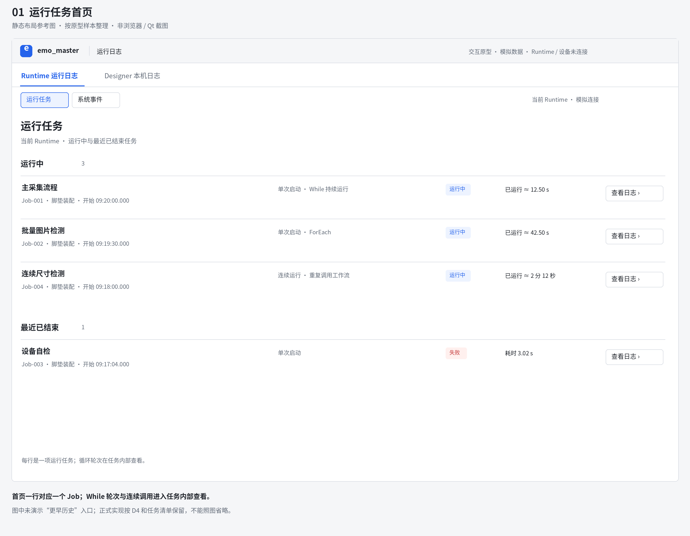
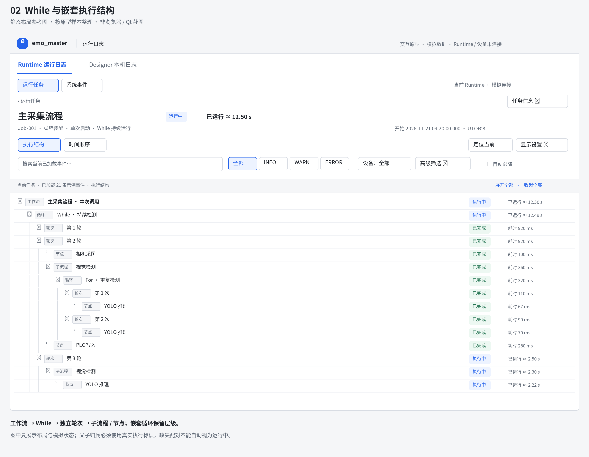
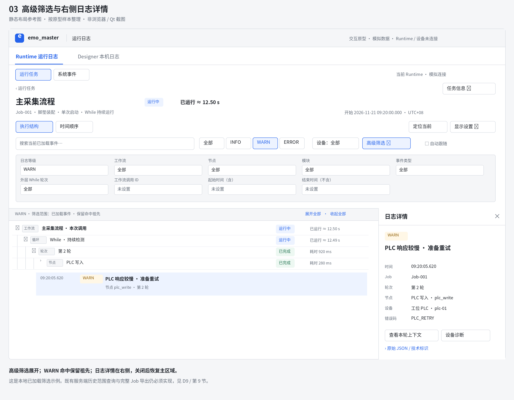
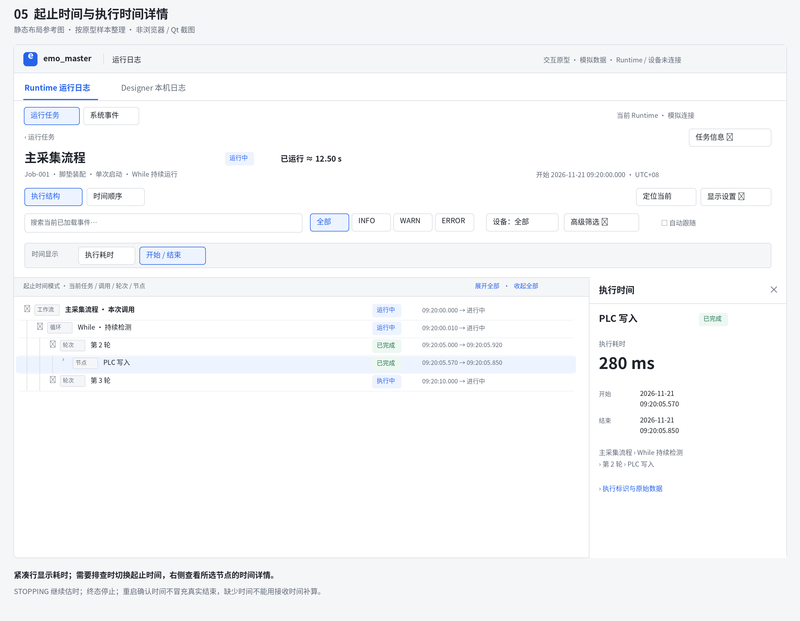
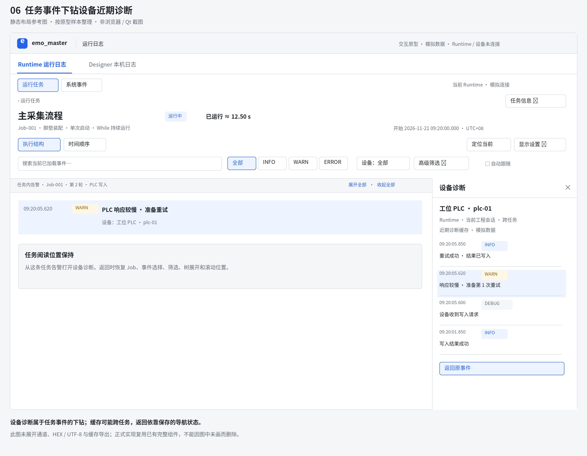
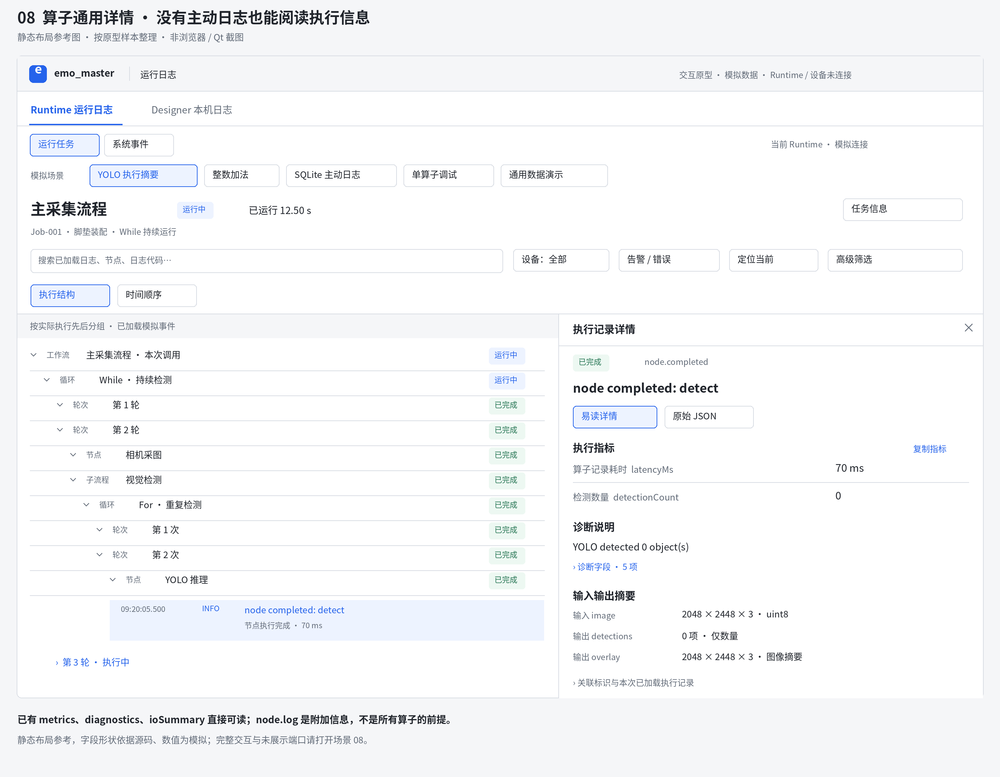
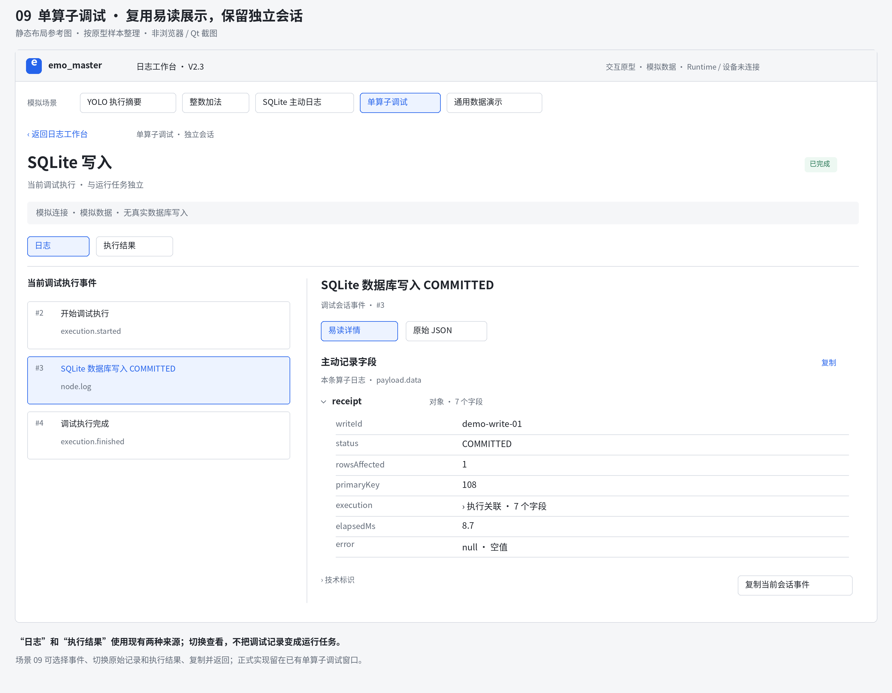

emo_master 日志工作台 · 视觉参照
V2.3 算子覆盖补齐与精简审查
9 张静态布局参考图 · 模拟数据 · 非浏览器 / Qt 截图图片说明区域关系与状态；点击“打开对应可点击场景”体验真实原型。数据、查询、归属和时间规则以 design / spec 为准。图片未展示的历史查询、完整导出、设备诊断通道等能力不能省略。
01 · 运行任务首页
打开对应可点击场景 ↗ 查看高清 PNG 查看可缩放 SVG

02 · While 与嵌套执行结构
打开对应可点击场景 ↗ 查看高清 PNG 查看可缩放 SVG

图 03 保留筛选与区域布局；算子详情内容以图 08、最新可点击原型和 D10 补充规则为准。
03 · 高级筛选与右侧详情
打开对应可点击场景 ↗ 查看高清 PNG 查看可缩放 SVG

04 · 连续运行的多次调用
打开对应可点击场景 ↗ 查看高清 PNG 查看可缩放 SVG

05 · 起止时间与执行详情
打开对应可点击场景 ↗ 查看高清 PNG 查看可缩放 SVG

06 · 设备近期诊断与返回
打开对应可点击场景 ↗ 查看高清 PNG 查看可缩放 SVG

07 · Designer 本机日志
打开对应可点击场景 ↗ 查看高清 PNG 查看可缩放 SVG

08 · 通用节点摘要与主动日志
打开对应可点击场景 ↗ 查看高清 PNG 查看可缩放 SVG

09 · 独立单算子调试
打开对应可点击场景 ↗ 查看高清 PNG 查看可缩放 SVG
